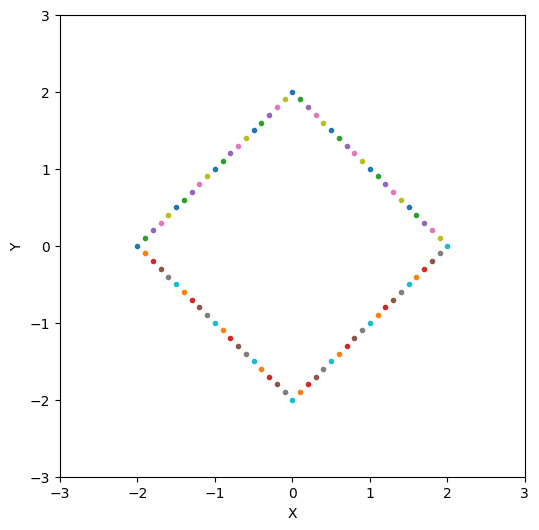
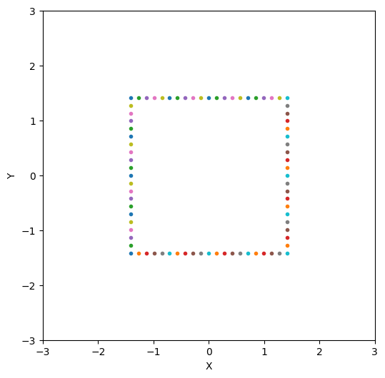

マンハッタン距離 - 45度回転テク
概要
- 全ての座標を \( (x,y) \) から \( (x-y,x+y) \) に変形する
- 回転前のマンハッタン距離は，回転後のチェビシェフ距離と一致する．
- そのため，マンハッタン距離を求めるために \(x\) 座標と \(y\) 座標を独立に計算することができるようになる．
対象問題
以下の問題について考える．
問題：
任意の \((x_{1}, y_{1}), \dots, (x_{N}, y_{N}) \) について，
\[
d = |x_{i} - x_{j}| + |y_{i} - y_{j}| \quad (1 \leq i,j \leq N)
\]
を満たす \(d\) の最大値はいくつか？
制約：
- \( 2 \leq N \leq 10^{5}\)
- \(10^{9} \leq x_{i} \leq 10^{9} \quad (1 \leq i \leq N)\)
出典：
[競プロ典型90問 036 - Max Manhattan
Distance（★5）]
普通にコードを書くと以下のようになる．
for(int i=0;i<N;i++){
for(int j=0;j<N;j++){
int d = abs(x[i] - x[j]) + abs(y[i] - y[j]);
}
}
しかし，時間計算量が \( O(N^{2})\) となってしまうため，何かしらの工夫が必要となる．
導出
例
例として \( N = 3\) のとき，
- \( (x_{1},y_{1}) = (0,0)\)
- \( (x_{2},y_{2}) = (1,1)\)
- \( (x_{3},y_{3}) = (2,0)\)
の場合を考える．
\(i=1\) について着目した場合，
\[
d = |x_{1} - x_{2}| + |y_{1} - y_{2}| =
|x_{1} - x_{3}| + |y_{1} - y_{3}| = 2
\]
となるため，\( (x_{1},y_{1})\) において \( d= 2\) となる座標に点を打つと以下のようになる．

上記の図より，正方形の線上に存在することが確認できる．
次に，上記の正方形を時計回りに45度回転させる．
そのため，\(\theta=45^{\circ}\) として， \((x,y)\) を回転行列にかけると以下のようになる．
\[
\begin{bmatrix}
\cos \theta & - \sin \theta \\
\cos \theta & \sin \theta \\
\end{bmatrix}
\begin{bmatrix}
x \\
y \\
\end{bmatrix}
=
\begin{bmatrix}
x \cos \theta -y \sin \theta \\
x \cos \theta + y \sin \theta \\
\end{bmatrix}
\]
\(\theta=45^{\circ}\) を代入すると，
\[
\begin{bmatrix}
x \cos 45^{\circ} -y \sin 45^{\circ} \\
x \cos 45^{\circ} + y \sin 45^{\circ} \\
\end{bmatrix}
= \frac{1}{\sqrt{2}}
\begin{bmatrix}
x - y \\
x + y \\
\end{bmatrix}
\]
この式変形に従って，実際に図示すると以下のようになる．

ちゃんと時計回りに45度回転できていることが確認できる．
マンハッタン距離からチェビシェフ距離への変形
回転前のマンハッタン距離は，45度回転した座標を \( \sqrt{2}\) 倍したときのチェビシェフ距離と一致する．
チェビシェフ距離の定義
\[
D(\textbf{x}, \textbf{y}) = \max(|x_{i} - y_{i}|)
\]
一致することの証明
任意の \((x_{i}, y_{i})\) と \((x_{j}, y_{j})\) のマンハッタン距離を以下のように式変形する．
\[
d = |x_{i} - x_{j}| + |y_{i} - y_{j}| =
\max(x_{i} - x_{j},x_{j} - x_{i}) + \max(y_{i}-y_{j},y_{j}- y_{i})
\]
分配法則より，以下の4パターンに分けることができる．
\[
= \max
\begin{pmatrix}
(x_{i}-x_{j}) + (y_{i}-y_{j}) \\
(x_{i}-x_{j}) + (y_{j}-y_{i}) \\
(x_{j}-x_{i}) + (y_{i}-y_{j}) \\
(x_{j}-x_{i}) + (y_{j}-y_{i}) \\
\end{pmatrix}
\]
ここで，\( (u_{i},v_{i}) = (x_{i} - y_{i}, x_{i} + y_{i} ) \)，\( (u_{j},v_{j}) = (x_{j} - y_{j}, x_{j} + y_{j} ) \)
とおくと，
\[
= \max(
u_{i} - u_{j} ,
u_{j} - u_{i} ,
v_{i} - v_{j} ,
v_{j} - v_{i} ,
)
=
\max(|u_{i} - u_{i}|, |v_{i} - v_{j} |)
\]
したがって，座標を45度回転させて\(\sqrt{2}\) 倍することによって，マンハッタン距離からチェビシェフ距離に変形することができる．
問題をマンハッタン距離からチェビシェフ距離に再定義して解く
問題の再定義
問題を以下のように再定義する．
問題：
任意の \((x_{1}, y_{1}), \dots, (x_{N}, y_{N}) \) について，
\[
d = |x_{i} - x_{j}| + |y_{i} - y_{j}| \quad (1 \leq i,j \leq N)
\]
より，
\( (u_{i},v_{i}) = (x_{i} - y_{i}, x_{i} + y_{i} ) \)，\( (u_{j},v_{j}) = (x_{j} - y_{j}, x_{j} + y_{j} ) \)
としたときに，
\[
d = \max(|u_{i} - u_{i}|, |v_{i} - v_{j} |)
\]
を満たす \(d\) の最大値はいくつか？
解法
以下のように \(u_{i}\) ，\(v_{i}\) \((1 \leq i \leq N)\) の最大値と最小値を定義する．
\[
\begin{bmatrix}
u^{max} \\
u^{min} \\
v^{max} \\
v^{min}\\
\end{bmatrix}
=
\begin{bmatrix}
\max(u_{1},\dots,u_{N})\\
\min(u_{1},\dots,u_{N})\\
\max(v_{1},\dots,v_{N})\\
\min(v_{1},\dots,v_{N})\\
\end{bmatrix}
\]
このとき，\(d\) の最大値は，
\[
d = \max(u_{i} - u^{max},u_{i} - u^{min},v_{i} - v^{max},v_{i} - v^{min})
\quad
(1 \leq i \leq N)
\]
となる．
ソースコード
#include<iostream>
#include<vector>
int main(){
int N;
cin >> N;
long long max_x = -(1<<30), max_y = -(1<<30), mi_x = (1<<30), min_y = (1<<30);
vector<long long> X(N), Y(N);
for (int i = 0; i < N; i++)
{
cin >> X[i] >> Y[i];
x = (X - Y);
y = (X + Y);
max_x = max(max_x, x);
min_x = min(min_x, x);
max_x = max(max_y, y);
min_y = min(min_y, y);
}
long long answer = -(1<<30);
for (int i = 0; i < N; i++)
{
answer = min(max({abs(max_x - X[i]), abs(max_y - Y[i]), abs(min_x - X[i]), abs(min_y - Y[i])}));
}
cout << answer << endl;
}
戻る